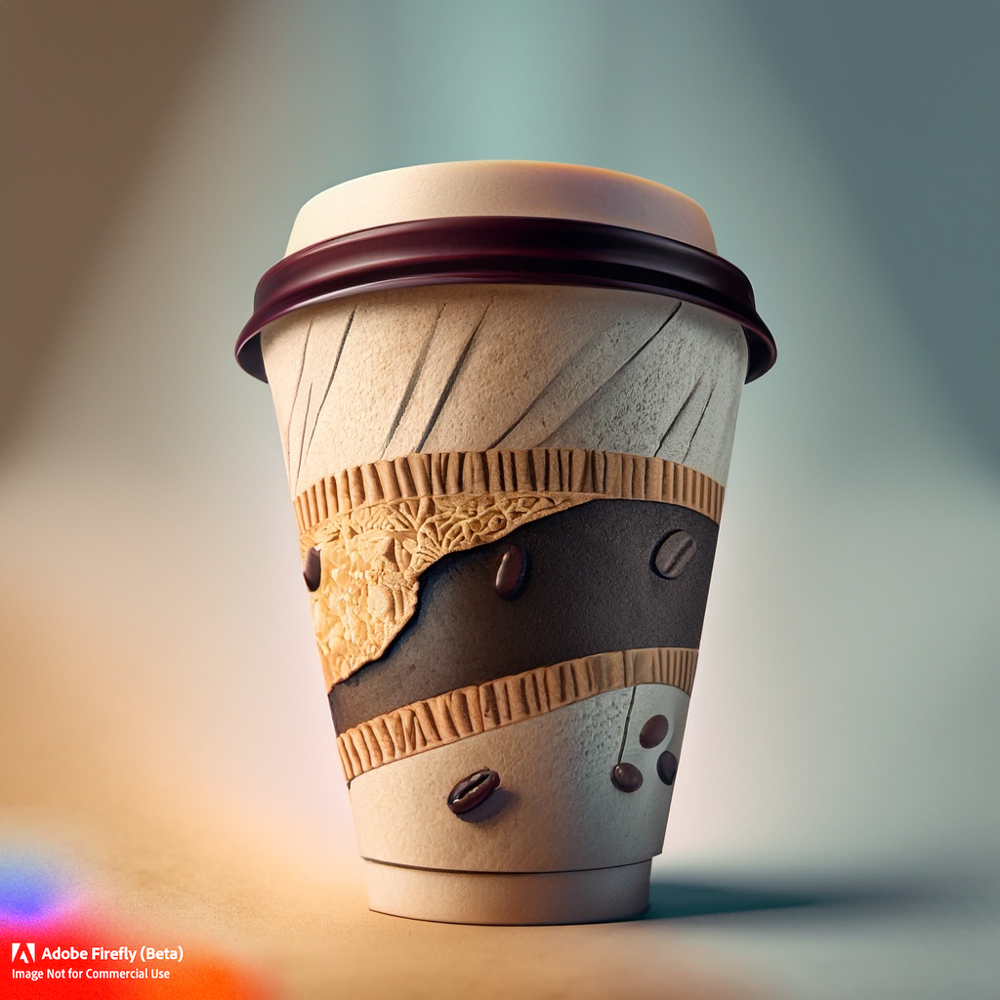
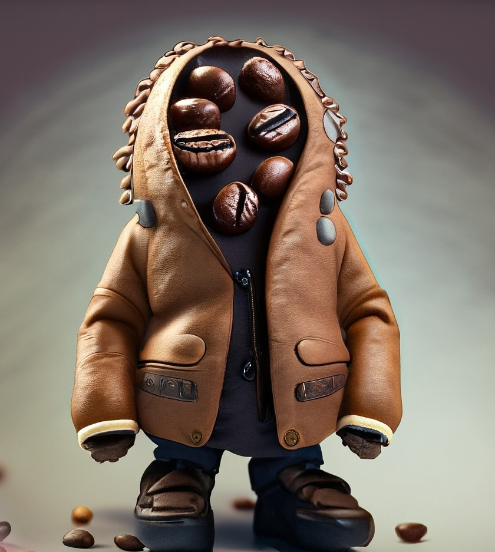

Picture this: It's an ordinary day, and you find yourself at your favorite coffee shop, ordering your usual cup of joe. You swiftly grab your order, and as you head off to work, you can't help but notice the humble coffee cup that contains your delicious beverage. Made of paper, it's equipped with a lid and, of course, that ever-present sleeve. But have you ever wondered about the story behind that seemingly insignificant sleeve? Prepare to be amazed as we delve into the journey of how one person transformed this simple concept into a thriving business, serving over 500 clients within it’s first year of establishment and generating an astonishing five million dollars revenue in the years ahead.

You never know when your Eureka moment could be, well, Archimedes had it while taking a bath and Jay Sorensen, the founder of Java Jacket, had it while holding a cup of Hot Coffee. Back in 1989, Sorensen noticed how consumers struggled with hot cups and the need for makeshift solutions like napkins or sleeves and set out to design a practical and efficient solution: a piece of cardboard cut out in a size to fit a Cup. Simple, right?
If you’re wondering that this was a common problem anybody must have noticed back then, you’re right, coffee-shop owners did observe this simple challenge that their customers faced and they too came up with solutions like doubling the cup, but those ideas were definitely inefficient since they increased both cost and waste.
In 1990, Sorensen approached the popular coffee conglomerate, Starbucks, with a prototype in hand and an objective in mind: to get a deal. Initially Starbucks did show interest and put a condition forward, it being that they get the exclusive rights over the sleeves, Sorensen agreed, however, Starbucks had second thoughts later on and thus stalled the deal for quite some time. Meanwhile Jay was left with neither bucks, nor a deal. [pun intended]

Like any other success story, this too has that one ingredient that drives the success of an idea: Perseverance. Despite being denied a deal from Starbucks for quite some time now, Sorensen believed in his idea and continued to pitch it to other coffee brands. Sure it took quite a few visits to the outlets with the same prototype in hand and the very same objective in his mind every time: to get a deal. Finally, the then-rival of Starbucks, namely, Coffee People, gave an order of 10,000 sleeves and there it was, the first deal for Java Jacket. He obviously continued to pitch the idea to a few more and of course people too noticed sleeves on cups now ergo the idea got popular! Soon other coffee chains recognized the value of these sleeves and wanted them on their cups too, Sorensen was happy, business was on and in a later turn of events, in order to expand clientele, he also made sleeves for cold beverages and had as its customers, various tea shops, juice bars, and even food service providers.
It’s amazing how a simple observation mixed with passion and persistence can make up for an idea that makes way for a business. So the next time you grab your cup of coffee and your fingers do not sense a tingling hot, you know Sorensen was the guy behind it.
Image source: Adobe Firefly Beta
Author: Shreya Chhabra